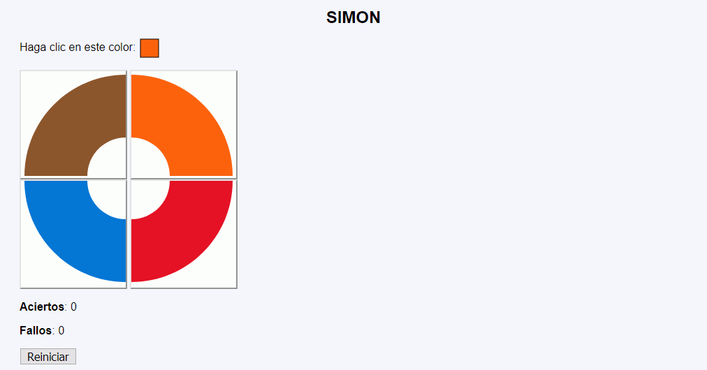
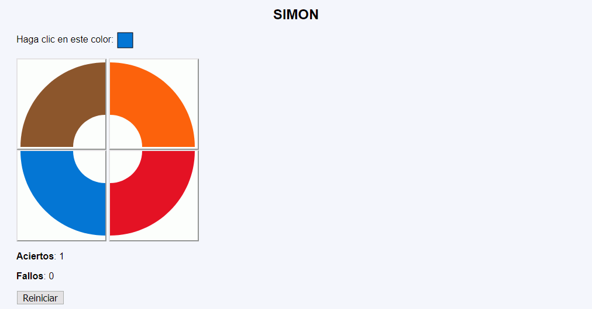

Simon - Ejemplo de programa
Nota: El día del examen los alumnos no tienen acceso a este ejemplo, solamente tienen acceso a las capturas del apartado anterior.
Un ejemplo de programa puede probarse en la ventana siguiente:
En este ejercicio se debe crear un programa que imite el funcionamiento básico del juego clásico Simon.


<p>Haga clic en este color: <img src="img/r3.svg" alt="Color" width="30" height="30" style="vertical-align: middle"></p>
<form action="simon-2.php">
<p>
<button name="eleccion" value="1">
<img src="img/1.svg" alt="Marrón" width="150" height="150">
</button>
<button name="eleccion" value="2">
<img src="img/2.svg" alt="Naranja" width="150" height="150">
</button>
<br>
<button name="eleccion" value="3">
<img src="img/3.svg" alt="Azul" width="150" height="150">
</button>
<button name="eleccion" value="4">
<img src="img/4.svg" alt="Rojo" width="150" height="150">
</button>
</p>
<p><strong>Aciertos</strong>: 1</p>
<p><strong>Fallos</strong>: 1</p>
<p><input type="submit" name="eleccion" value="Reiniciar"></p>
</form>
Nota: El día del examen los alumnos no tienen acceso a este ejemplo, solamente tienen acceso a las capturas del apartado anterior.
Un ejemplo de programa puede probarse en la ventana siguiente: